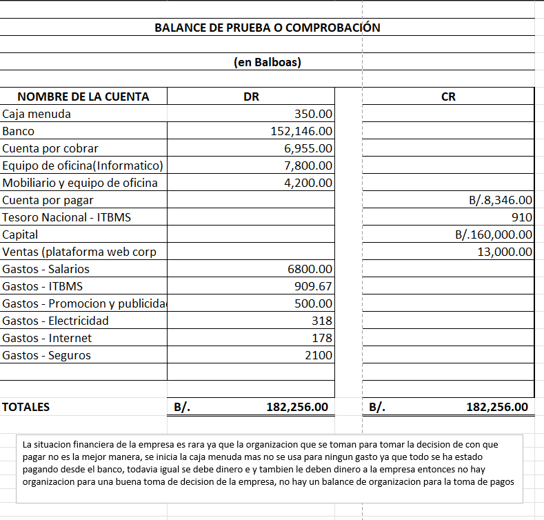

Una secuencia de aprendizaje
Portafolio de fin de semestre
Contabilidad · 2026
Universidad Tecnológica de Panamá
Contabilidad:
del concepto a la práctica.
Un recorrido visual por los trabajos, ejercicios y exposiciones realizados durante el semestre.
Abrahan Tuñón Estudiante de Licenciatura en Desarrollo y Gestion de Software
Alina Cardoze Profesora de Contabilidad
Portafolio semestral
Comenzar ↓
← Portafolio
02 / Recorrido
Semestre 2026
Siguiente →
← Anterior
03 / Fundamentos
Mapa mental
Principios contables generalmente aceptados en Panamá.
Esta actividad permitió relacionar los principios que orientan el registro y la presentación de la información contable.
Mapa mental · PCGA
Siguiente →
← Anterior
04 / Análisis
Comparar
Dos formas de mirar la contabilidad.
01
Contabilidad financiera
Se enfoca en informar la situación de la empresa a usuarios externos y en presentar estados financieros.
02
Contabilidad administrativa
Apoya la planificación, el control y la toma de decisiones internas de la organización.
03
Caso Theranos
El trabajo grupal evidenció el valor de la ética, la transparencia y la información verificable.
Cuadro comparativo · Caso Theranos
Siguiente →
← Anterior
05 / Clasificación
Catálogo de cuentas
Comprender qué representa cada cuenta.
Recursos y bienes que la empresa posee o controla.
Deudas y compromisos pendientes con terceros.
Participación de los propietarios dentro de la empresa.
Entradas originadas por las operaciones del negocio.
Consumos y desembolsos necesarios para operar.
Distinguimos las cuentas permanentes de las que se cierran al final del período.
Idea central:
Clasificar correctamente cada cuenta permite saber qué aumenta, qué disminuye y cómo
se refleja cada operación en los estados financieros.
Activo · Pasivo · Capital · Resultados
Siguiente →
← Anterior
06 / Aplicación
Ejercicios contables
Del diario, al mayor y al balance.
Las prácticas permitieron registrar cada transacción y seguir su efecto hasta comprobar que los débitos y créditos estuvieran equilibrados.
Libro diario
Registramos las operaciones en orden cronológico, aplicando débitos y créditos.
Libro mayor
Trasladamos los movimientos a cada cuenta para conocer sus saldos y cambios.
Balance de comprobación
Verificamos que el total de débitos y créditos coincida antes de preparar informes.
Diario · Mayor · Balance de comprobación
Siguiente →
← Anterior
07 / Evaluaciones
Evidencias
Evaluaciones parciales.
Parcial 1
Fundamentos Principios Contables Generalmente AceptadosParcial 2
Diario, mayor y balance
Solo puse esta imagen porque no pude subir el Excel completo; se lo debo, profesora.
Evaluaciones parciales
Siguiente →
← Anterior
08 / Charlas
Charlas grupales
Planilla, pago y registro contable.
Las charlas combinaron investigación, explicación del tema, ejemplos prácticos, dinámicas de integración y una breve evaluación para comprobar el aprendizaje. Todos los compañeros expositores demostraron un buen rendimiento, preparación y dominio de sus temas.
Planilla de pago
Vimos qué es una planilla, cómo reúne los datos de los trabajadores y por qué permite organizar correctamente los pagos de una empresa.
Restricciones y deducciones legales
Analizamos los descuentos autorizados y las contribuciones vinculadas al salario, comprendiendo su importancia para el trabajador y el empleador.
Planilla quincenal
Conocimos el proceso para preparar pagos por quincena, considerando el salario, las deducciones y el valor final que recibe cada colaborador.
Registro contable de la planilla
Relacionamos la planilla con los registros de gastos y obligaciones para reflejar de forma ordenada el efecto de la nómina en la contabilidad.
Módulo: sistema de pago y registro de planilla
Siguiente →
← Anterior
09 / Cierre
Conclusión
Una de las clases más valiosas que tuve este semestre.
Esta materia me ayudó a comprender que la contabilidad no son solo números: es una de las cosas mas importantes a la hora de un negocio perce y como usted dice nosotros en nuestra area es de negocio y que es importante y valioso saber un poco de esto y de muchas cosas que nos da la contabilidad
También destaco el desempeño y las ganas de enseñar de la profesora. Su manera clara, paciente y práctica de explicar hizo que los temas parecieran más sencillos de entender, y motivó al grupo a participar, aprender y aplicar cada contenido con seguridad. y tambien sus historias muy buenas.
Gracias, profesora
Abrahan Tuñón · Portafolio de Contabilidad
Volver al inicio ↑